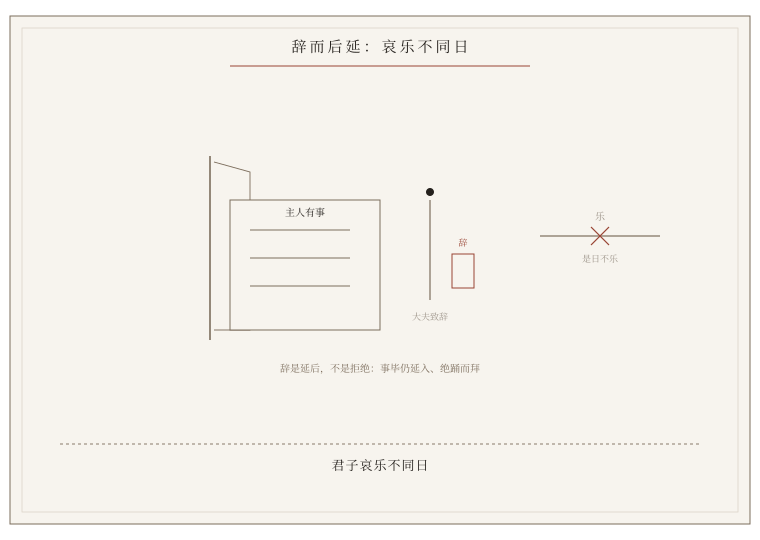

檀弓下 · 四·六 · 第 331 课
大夫吊，当事而至，则辞焉。吊于人，是日不乐。子于是日哭，则不歌。
说什么事：大夫来吊士，若主人正有大小敛殡之事，则遣人辞告「有事，不得出」。吊人之日不乐；孔子在这一日哭，则不歌。
落在哪一层：以「时」量哀。论「哀乐不同日」。
为何编在此位：三百二十九与三百三十课论「界」，此课论「时」。同一件心事，一日只容一件。
【经】大夫吊，當事而至，則辭焉。
【注】辭猶告也，擯者，以主人有事告也。主人無事，則為大夫出。
【经】吊於人，是曰不樂。子於是日哭，則不歌。
【注】君子哀樂不同日。
【疏】此一节论吊哭之礼，各依文解之。「大夫吊」者，谓大夫吊士也；「当事」，当主人有大小敛殡之事也；大夫尊，来吊士，则孝子应出下堂迎之；若正有事而至，则孝子遣人辞告之，道有事不得出也。注「辞犹至夫出」：此「出」者正谓出之于庭，不得出门外……若未小敛以前，唯君命出……正当小敛之节，大夫来吊，则辞之以有事；敛毕当踊之时，延大夫而入，绝踊而拜之……若士来吊，虽当敛，不告以有事；事毕，踊后，引士入，然后拜之。「妇人不越疆而吊人」，此是凡吊之法，妇人无外事，故不越疆而吊人。「吊于人，是曰不乐」，君子哀乐不同日；「子于是日哭，则不歌」。
当事 主人正有大小敛、殡之事。
辞 注「辞犹告也」。遣人告以有事，不出迎。
摈者 赞礼、传辞之人。
出 注「正谓出之于庭」。出至庭，不出门外。
不乐 不奏乐、不作乐事。
是日 此一日。
大夫来吊，若主人正有事，则遣人辞告「有事，不得出迎」。吊人之日不作乐。孔子在这一日哭过，就不再唱歌。
两条。前一条讲「辞」，后一条讲「不乐」。
「辞」不是拒客——疏说得清楚：辞了之后，敛毕当踊之时，还要「延大夫而入，绝踊而拜之」。所以辞是「延后」，不是「拒绝」。
「不乐」是注五字：「君子哀乐不同日。」一日之内，哀与乐不并存。
第一层 「辞」的分寸：延后，不是拒绝 主人正在敛殡，不能出迎；遣人告以有事。但事毕仍要请进来、停踊而拜。
所以礼的「辞」，是把「此刻不行」与「此礼不行」分开。此刻不行，礼仍在；此礼不行，则礼亡。今人办事，常把「今天不便」说成「不必了」，就是把两者混了。
第二层 尊卑之差：辞不辞看是谁来 大夫来吊则辞、则出迎至庭；士来吊则不辞，事毕后引之入，然后拜。
同是吊，礼按尊卑定「辞不辞」。这不是势利，是让「礼的节奏」跟着「来者的分量」调整。
第三层 「唯君命出」：最痛的时候只许一个人打扰 疏「若未小敛以前，唯君命出」。始丧哀戚甚，主人不出；只有君命，才出。
礼在最痛的时刻，替人挡住了所有来客，只留一个。这一条极见体贴：哀有它的绝对时刻，礼知道什么时候不该打扰。
第四层 「哀乐不同日」：情绪不给切碎 注五字。礼不禁止乐，禁止「同日」。它把哀与乐当作各占整块时间的东西，不许切成碎片混着用。
今人白天奔丧、晚上赴宴，以为「分得开」。礼说：分不开不是软弱，是礼认为人本来分不开。人不能在一天里既哭又歌——即使他做到了，那一天也不属于任何一件。
与今日何干 今人常把「不便」说成「不必」，把「顾不过来」说成「不在乎」。此节给的线：辞是延后，不是取消；哀乐不同日，不是同日各半。
| 左 | 右 |
|---|---|
| 当事而至 | 主人有敛殡之事 |
| 辞 | 告以有事，非拒 |
| 延入 | 事毕绝踊而拜 |
| 大夫来 | 辞，出至庭 |
| 士来 | 不辞，事毕后引 |
| 唯君命出 | 始丧之限 |
| 是日不乐 | 哀乐不同日 |
画一处殡宫门内，视点平视。门内堂上主人俯身于尸侧（只画衣与背影，不画尸面），旁有三四件敛具散置；门外阶下一人（大夫）执一简，作致辞状，旁立一摈者（只画衣与背影）。门半掩。不写文字。赭色只用在门外那人所执之简一道，与门扇一道边。
